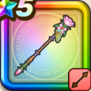

ラッキーフォーチュン
攻略班 9.5点 / シャナクロザリーの祝福ひと夏のシーブリーズずっと続きますようにあなたのおそばにいます助けてくんなしぇ！
くわしい特徴
【レベル別習得スキル】 Lv1【大神官】すばやさ+5 Lv1【守り人】守備力+5 Lv10シャナク（消費MP：10）仲間ひとりの呪いをとく Lv20ロザリーの祝福（消費MP：最大MPの10%）味方1人に悪い状態変化とすべての状態異常を防ぐ効果を付与し、幸運レベルを3上げる(戦闘中1回のみ使用可能) Lv30ひと夏のシーブリーズ（消費MP：63）敵全体に攻・回複合の550%の体技ダメージを与え、仲間全員のHPを回復し、左隣の味方の幸運レベルを1上げる Lv35ゾンビ系へのダメージ+5% Lv40怪人系へのダメージ+5% Lv45かいふく魔力+12 Lv50ずっと続きますように（消費MP：最大MPの10%）左隣の味方に行動開始時に良い効果を1ターン延長させる効果を付与する(効果3ターン) Lv50あなたのおそばにいます（消費MP：10）左隣の味方の幸運レベルを1上げる。幸運レベルはゾーン発生やテンション、直撃などの一部の効果が成功しやすくなる(最大2倍) Lv50助けてくんなしぇ！（消費MP：30）一部を除く敵の攻撃で自身がHP30%以下になると、左隣の味方のスキルダメージとこうげき力か攻撃呪文の威力をかなり上げる(戦闘中1回のみ) 【限界突破スキル】 1凸とくぎHP回復効果+5% 2凸かいふく魔力+5 3凸とくぎHP回復効果+5% 4凸かいふく魔力+5